학습 목표 (Learning Objectives)
- ✓속성 작용을 통한 퇴적암의 생성 과정과 기원에 따른 퇴적암의 종류를 분류할 수 있다.
- ✓퇴적암에 나타나는 4대 퇴적 구조의 생성 과정과 특징을 이해하고 과거의 퇴적 환경과 지층의 역전 여부를 추론할 수 있다.
핵심 개념 체크리스트
학습을 마친 개념은 직접 체크해보세요!
2026 사대부고 고2 지구과학 자체 교재 원문 기반
동기 유발 · 생각해보기
수업 시작 전 핵심 질문
Q. 인류의 역사는 고문서와 유물을 보고 알 수 있다. 그렇다면 인류가 존재하기 훨씬 전인 수억 년 전 지질 시대의 바다 수심, 물이 흐르던 방향, 가뭄 여부는 무엇을 보고 알아낼 수 있을까?
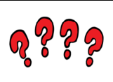

💡 먼저 스스로 이유를 추론해 본 뒤 버튼을 눌러 확인해보세요!
✨ 과학적 해설 및 모범 답안
퇴적물이 쌓일 당시의 자연환경(수심, 유속, 바람 방향, 건조 기후 등)이 암석 속에 화석처럼 새겨진 퇴적 구조(점이층리, 사층리, 연흔, 건열)와 퇴적암의 종류를 분석하면 수억 년 전의 퇴적 환경을 생생하게 복원할 수 있습니다.
핵심 개념 1
1. 퇴적암의 생성 과정(속성 작용)과 분류
(1) 속성 작용 (Diagenesis: 다짐 작용 + 교결 작용)
- •퇴적암 생성 단계: 풍화·침식 ➔ 운반·퇴적 ➔ 속성 작용(다짐 작용 + 교결 작용) ➔ 퇴적암
- •① 다짐(압축) 작용: 쌓인 퇴적물이 위쪽 퇴적물의 무게(중력)에 의해 눌리는 작용 ➔ 입자 사이의 간격과 공극(빈 공간)의 부피가 감소하고, 수분이 빠져나가며 퇴적물의 밀도가 증가한다.
- •② 교결 작용: 공극 사이에 흐르는 지하수에 녹아 있던 석회질($\text{CaCO}_3$), 규질($\text{SiO}_2$), 산화 철($\text{Fe}_2\text{O}_3$) 등 교결 물질이 침전하여 퇴적물 입자들을 단단히 붙여 암석화하는 작용
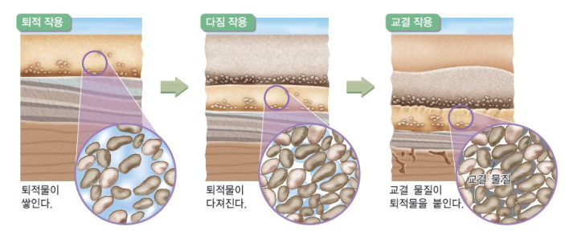
" class="max-h-72 w-auto object-contain rounded-lg group-hover:scale-[1.02] transition duration-300 cursor-zoom-in" onclick="openLightbox(this.src, '교재 그림: <퇴적물이 다짐 작용과 교결 작용(속성 작용)을 거쳐 퇴적암이 되는 과정>')" loading="lazy" />(2) 기원에 따른 퇴적암의 3대 분류 (교재 p.35)
- •퇴적물의 기원과 생성 과정에 따라 쇄설성 퇴적암, 화학적 퇴적암, 유기적 퇴적암으로 구분한다. (석회암과 처트는 화학적 침전과 유기적 유해 퇴적 두 가지 경로 모두로 생성될 수 있음에 유의!)
| 분류 | 생성 원리 및 구분 기준 | 대표적인 퇴적암 (기원 퇴적물) |
|---|---|---|
| 쇄설성 퇴적암 | 풍화·침식된 암석 조각이나 화산 분출물이 운반·퇴적되어 생성 (입자의 크기에 따라 구분) | • 점토($<\frac{1}{16}\text{ mm}$) ➔ 이암, 셰일 • 모래($\frac{1}{16}\sim 2\text{ mm}$) ➔ 사암 • 자갈($>2\text{ mm}$) ➔ 역암 • 화산재 ➔ 응회암 / 화산암괴·화산탄 ➔ 집괴암 |
| 화학적 퇴적암 | 물에 녹아 있던 화학 성분이 침전하거나 물이 증발하여 잔류물로 생성 | • 탄산 칼슘 침전 ➔ 석회암 • 규질($\text{SiO}_2$) 침전 ➔ 처트 • 해수 증발 잔류 ➔ 암염(소금), 석고 |
| 유기적 퇴적암 | 동식물 등 생물의 유해나 골격이 쌓여 생성 | • 산호·유공충·조개껍데기(석회질) ➔ 석회암 • 방산충·규조(규질 생물) ➔ 처트 • 식물 유해 ➔ 석탄 |
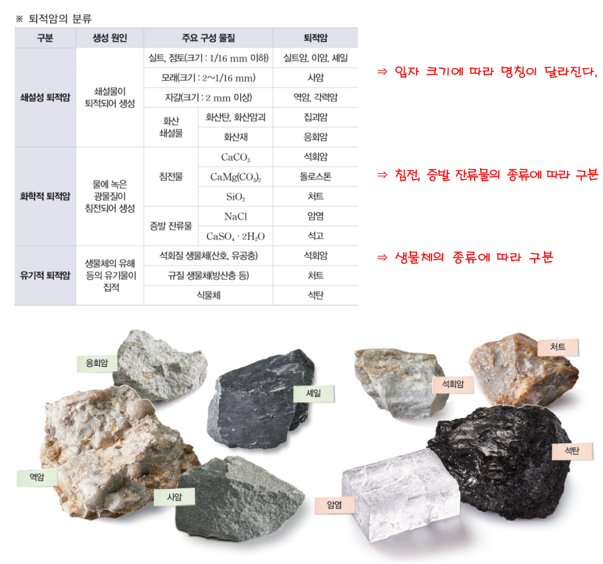
" class="max-h-72 w-auto object-contain rounded-lg group-hover:scale-[1.02] transition duration-300 cursor-zoom-in" onclick="openLightbox(this.src, '교재 그림: <다양한 퇴적암의 실제 사진 (역암, 사암, 셰일, 석회암, 응회암, 처트 등)>')" loading="lazy" />
핵심 개념 2
2. 4대 퇴적 구조와 과거 퇴적 환경 추론 (매우 중요!)
(1) 점이층리, 사층리, 연흔, 건열의 생성 환경과 지층 상하 판단
- •4대 퇴적 구조는 모두 ① 당시의 퇴적 환경을 알려줄 뿐만 아니라, ② 지층의 상하(역전 여부)를 판단하는 결정적 단서가 된다!
- •⭐ 오개념 주의 (교재 p.37 팁): 점이층리와 사층리는 주로 지층의 옆 단면(층리 단면)에서 잘 관찰되고, 연흔과 건열은 지층의 위 표면(층리면)과 단면 모두에서 특징적인 모양이 나타난다.
| 퇴적 구조 | 생성 원리 및 주요 퇴적 환경 | 정상 지층의 모양 (지층 상하·역전 판단 기준) |
|---|---|---|
| ① 점이층리 (Graded bedding) | 대륙붕 끝에서 저탁류가 대륙 사면을 따라 쏟아져 내려가거나 깊은 호수에 퇴적물이 급격히 유입될 때 무거운 입자부터 먼저 가라앉아 형성 (깊은 바다 대륙대, 깊은 호수) | 한 지층 내에서 아래(큰 입자·자갈) ➔ 위(작은 입자·점토)로 갈수록 입자 크기가 작아짐 |
| ② 사층리 (Cross bedding) | 수심이 얕은 물밑(하천·삼각주)이나 사막(바람)에서 퇴적물이 이동하며 비스듬한 경사면을 따라 쌓여 형성 | • 경사면이 위쪽은 급하고(잘린 모양) 아래쪽은 완만하게 오목해짐 • 경사면이 기운 아래쪽 방향이 물이나 바람이 흘러간 방향! |
| ③ 연흔 (Ripple mark) | 수심이 얕은 바다나 호수 바닥에서 잔물결(파도)의 왕복 운동으로 표면에 생긴 물결 자국 | 위로 볼록한 마루가 뾰족하고 아래로 오목한 골이 완만함 |
| ④ 건열 (Mud crack) | 건조한 기후에서 점토질 퇴적물이 수면 위로 노출되어 증발하면서 표면이 거북 등처럼 갈라진 구조 | 단면이 쐐기(V자) 모양으로 위쪽이 넓고 아래쪽이 뾰족함 |
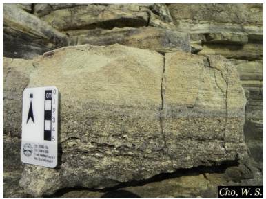
" class="max-h-72 w-auto object-contain rounded-lg group-hover:scale-[1.02] transition duration-300 cursor-zoom-in" onclick="openLightbox(this.src, '교재 그림: <점이층리 실제 사진>')" loading="lazy" />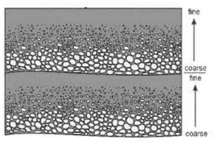
" class="max-h-72 w-auto object-contain rounded-lg group-hover:scale-[1.02] transition duration-300 cursor-zoom-in" onclick="openLightbox(this.src, '교재 그림: <점이층리 형성 모식도>')" loading="lazy" />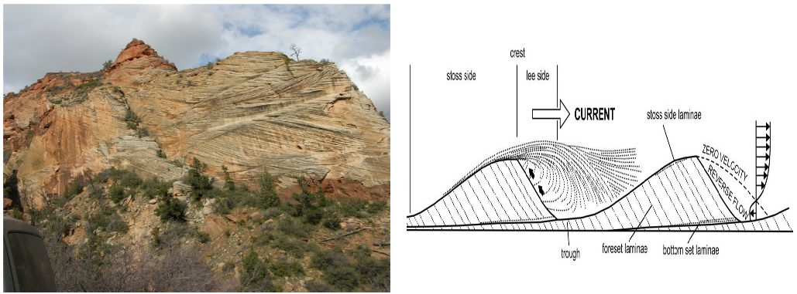
" class="max-h-72 w-auto object-contain rounded-lg group-hover:scale-[1.02] transition duration-300 cursor-zoom-in" onclick="openLightbox(this.src, '교재 그림: <사층리 실제 사진 및 물/바람 방향과 형성 과정>')" loading="lazy" />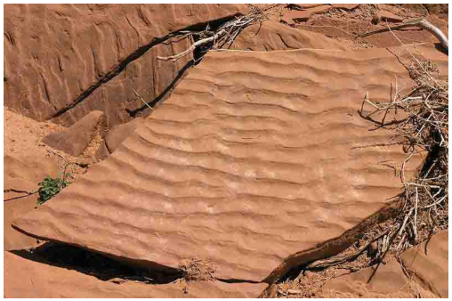
" class="max-h-72 w-auto object-contain rounded-lg group-hover:scale-[1.02] transition duration-300 cursor-zoom-in" onclick="openLightbox(this.src, '교재 그림: <연흔 실제 사진>')" loading="lazy" />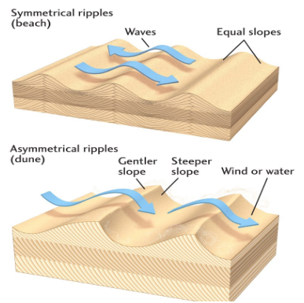
" class="max-h-72 w-auto object-contain rounded-lg group-hover:scale-[1.02] transition duration-300 cursor-zoom-in" onclick="openLightbox(this.src, '교재 그림: <연흔의 단면 구조와 역전 판단>')" loading="lazy" />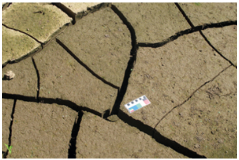
" class="max-h-72 w-auto object-contain rounded-lg group-hover:scale-[1.02] transition duration-300 cursor-zoom-in" onclick="openLightbox(this.src, '교재 그림: <건열 실제 사진>')" loading="lazy" />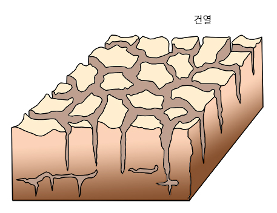
" class="max-h-72 w-auto object-contain rounded-lg group-hover:scale-[1.02] transition duration-300 cursor-zoom-in" onclick="openLightbox(this.src, '교재 그림: <건열의 쐐기 단면 구조>')" loading="lazy" />
핵심 개념 3
3. 육상 · 연안 · 해양 퇴적 환경
(1) 주요 퇴적 환경의 위치와 특징 (교재 p.38)
- •육상 환경: 선상지(산기슭 경사 급변지, 역암), 범람원, 호수, 사막(사층리) ➔ 주로 쇄설성 퇴적암 형성
- •연안(전이) 환경: 육지와 바다의 경계인 삼각주(강 하구, 사층리), 해빈(모래사장), 갯벌, 석호
- •해양 환경: 대륙붕(수심 $200\text{ m}$ 이내), 대륙 사면(저탁류 발생), 대륙대(저탁류에 의해 점이층리와 저탁암 형성), 심해저 평원(석회질·규질 연니)
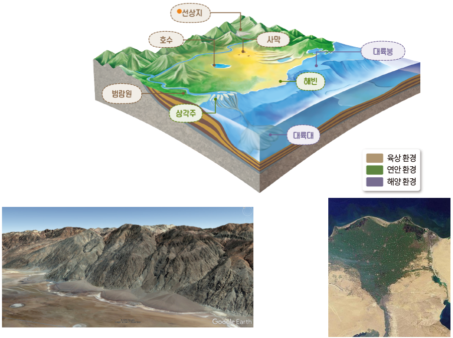
" class="max-h-72 w-auto object-contain rounded-lg group-hover:scale-[1.02] transition duration-300 cursor-zoom-in" onclick="openLightbox(this.src, '교재 그림: <육상 환경(선상지)과 연안 환경(삼각주)>')" loading="lazy" />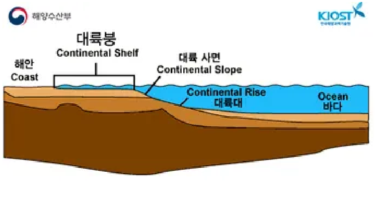
" class="max-h-72 w-auto object-contain rounded-lg group-hover:scale-[1.02] transition duration-300 cursor-zoom-in" onclick="openLightbox(this.src, '교재 그림: <해양 퇴적 환경 (대륙붕, 대륙 사면, 대륙대, 심해저)>')" loading="lazy" />
Interactive Checkpoints
클릭하면 교재 빈칸 정답과 해설이 나타납니다
단원 개념 적용하기 & 확인 문제
Q1
교재 p.36~37 확인: 어떤 지층 단면에서 건열의 뾰족한 쐐기 끝이 위쪽(하늘 방향)을 향하고 있다면 이 지층에서 알 수 있는 사실 두 가지는?
모범 답안 및 해설
첫째, 퇴적 당시 얕은 물밑의 점토층이 수면 위로 드러나 말라 갈라질 정도로 건조한 환경이었음을 알 수 있습니다. 둘째, 정상적인 건열은 아래쪽이 뾰족해야 하므로 이 지층은 퇴적 후 대규모 지각 변동(횡압력 등)을 받아 상하가 뒤집혔음(역전되었음)을 알 수 있습니다.
Q2
확인 질문: 대륙붕에 쌓여 있던 퇴적물이 해저 지진 등으로 대륙 사면을 따라 저탁류를 일으키며 대륙대에 쌓일 때 형성되는 대표적인 퇴적 구조는?
모범 답안 및 해설
입자가 큰 자갈·모래가 먼저 가라앉고 작은 점토가 나중에 가라앉아 위로 갈수록 입자 크기가 작아지는 점이층리가 형성됩니다.